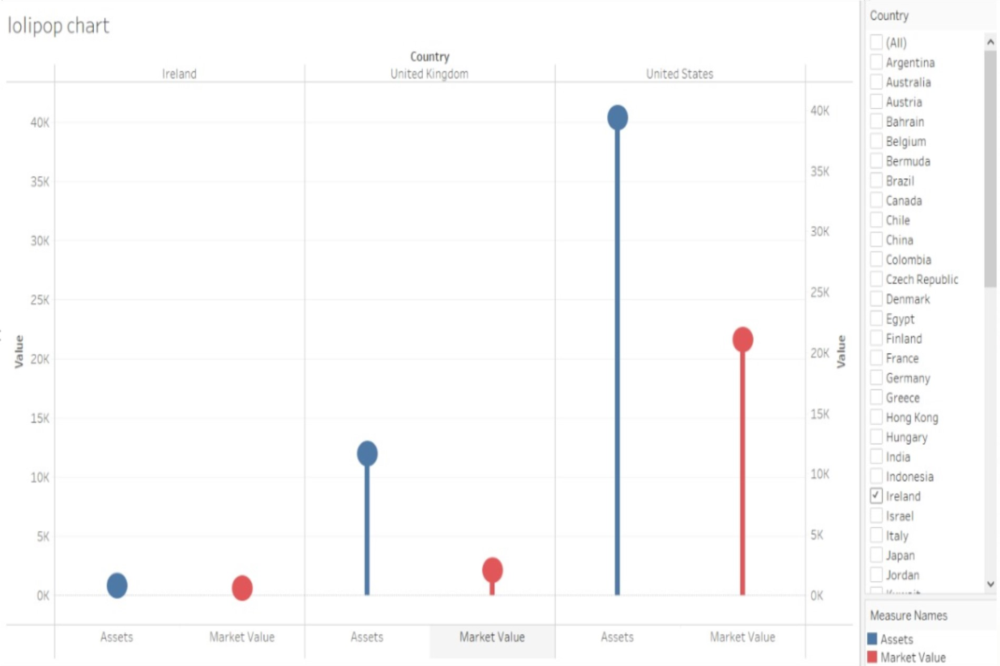
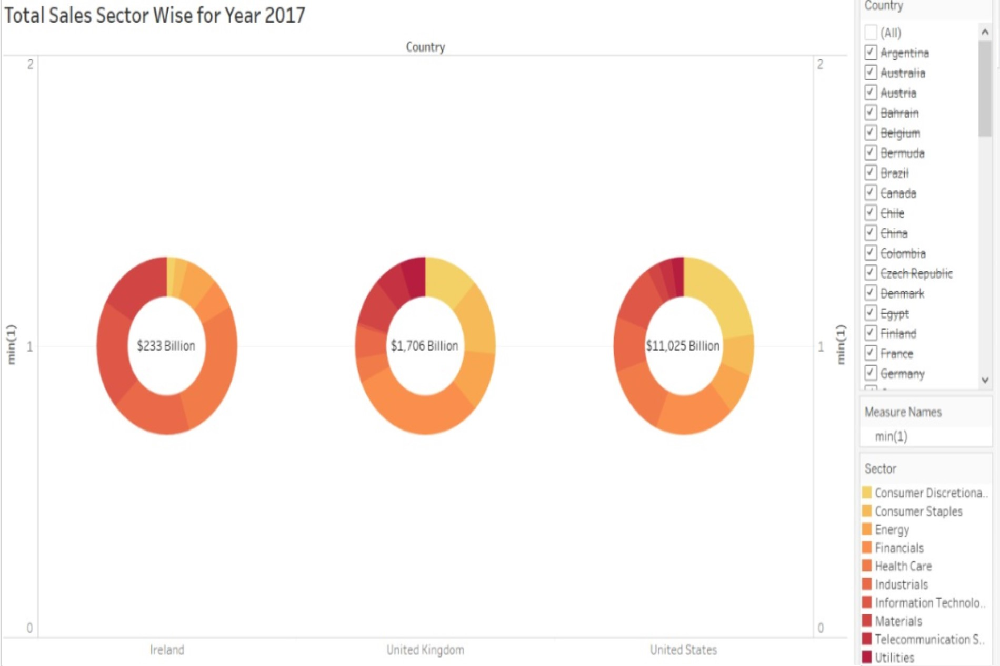
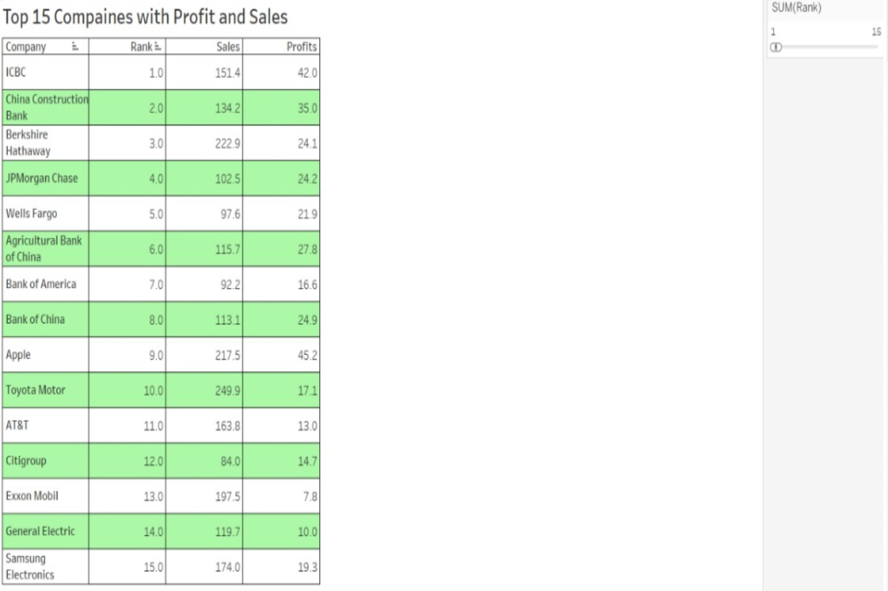
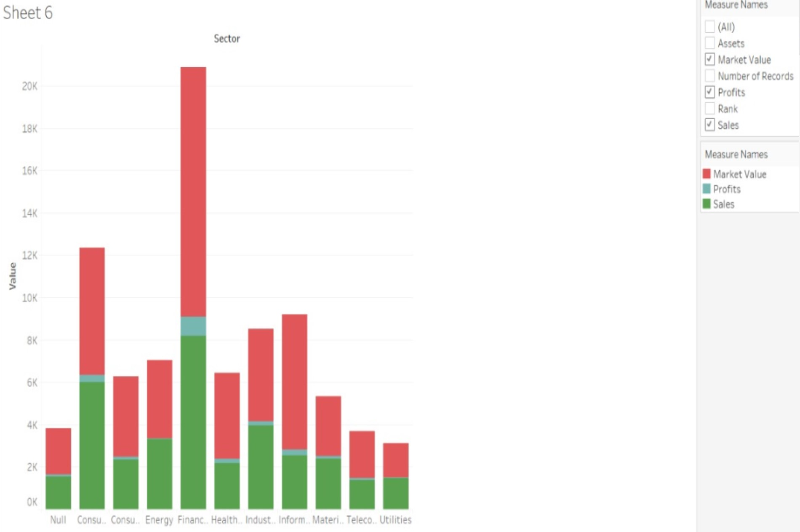

This project is to learn and implement various visualization techniques available, to perform business intelligence task and enhance it by critically evaluating interpreted output. Developing and demonstrating the skills essential for visualization of complex dataset. “Numbers have an important story to tell. They rely on you to give them a voice.” - Stephen Few. Objective is to identify any correlation or insights hidden within the numeric data. Also, to have clear picture from the dataset about market value, profit, sales, assets, for various sector in different industries which can be useful for companies across the globe to expand their business intelligence. Ultimately providing not just the data but knowledge about business.
Shows sector wise breakdown of sales for each country. With the help of added filters for country and sector it can help in segmenting for the content on which to focus.
Showing Company and its global ranking, by displaying various other useful data in tabular format which is traditional and common way of interpreting data without and complexity.
Highlighting the countries based on the sum of its sales and along with pie chart showing information of profit in individual sector for specific country. Hence combined information of country and its sales in various sector and profit earned is readily understandable from this visualization.
It shows combined result as union of countries and companies in that countries which helps in comparing the assets and market value with less complexity by focusing on desired insight.
Shows correlation between Profits, Sales and Market Values for each sector and by arranging columns in ascending order shows that Financials sectors has maximum growth and all the three entities grow simultaneously.
Hence by fulfilling the objective of analysis it is observed that USA has highest sum of sales in which Financials and Consumer Discretionary contributing maximum. Also it is easy to know identify which sector is dominant in specific country by using Donut chart. Ranking filter in text Table is useful to identify the goodwill of company by search its global rank along with sales and profit. Hence valuation of each company with respect to assets and market value in its own country can be compared using lollipop chart by using filters linked together. Finally showing that Financials sector is the major contributor followed by Consumer Discretionary. This trends and insights would have been difficult to identify without the help of visualization.
• Had to gain basic knowledge for Business Domain, terminologies, relationship between assets and profit of company, etc.
• Also had to learn how to implement graphs and charts which are not readily available on tableau just by single click.
• Need to understand some of the basics of graphical illustration of thing like which share/colour to use, what symbols to use so that visualization says neutral and appropriate socially.
• Fulfil minimum requirements of Dimensions and measures for each chart which were not readily available in Tableau. So, needed to twerk the chart and choice of chart accordingly.
• As the data was taken from public domain had to research for the authenticity of the data and weather the downloaded file is safe to access and transport to other system.
Combined Map & Pie Chart
Lollipop Chart
Donut Chart
Descriptive Table
Staked Histogram